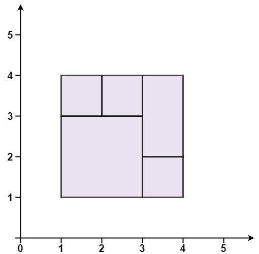
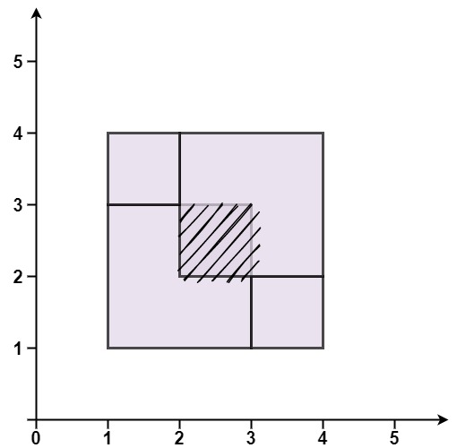

391. 完美矩形
两个条件缺一不可：所有矩形面积和 == 包住全体的大矩形面积；顶点做奇偶计数后，出现奇数次的恰好是大矩形四个角。
思路
- 面积和用
long累加（坐标 ±1e5，面积最大 4×10¹⁰ 会爆int）。 - 每个矩形的 4 个顶点往集合里做「有则删、无则加」：内部接缝上的顶点必成对出现被抵消。
- 扫完后集合应恰好剩 4 个元素，且就是大矩形的 4 个角；否则有 T 形接缝或错位。
- 只查面积会被「重叠和空洞互相抵消」骗过，只查顶点会被面积不齐骗过，所以两个条件都要验。
图解
最优解
1import java.util.*;2 3class Solution {4 public boolean isRectangleCover(int[][] rectangles) {5 long area = 0;6 int minX = Integer.MAX_VALUE, minY = Integer.MAX_VALUE;7 int maxX = Integer.MIN_VALUE, maxY = Integer.MIN_VALUE;8 Set<Long> odd = new HashSet<>();9 for (int[] r : rectangles) {10 area += (long) (r[2] - r[0]) * (r[3] - r[1]);11 minX = Math.min(minX, r[0]);12 minY = Math.min(minY, r[1]);13 maxX = Math.max(maxX, r[2]);14 maxY = Math.max(maxY, r[3]);15 // 每个矩形的 4 个顶点做奇偶计数：出现偶数次就抵消移出16 toggle(odd, r[0], r[1]);17 toggle(odd, r[0], r[3]);18 toggle(odd, r[2], r[1]);19 toggle(odd, r[2], r[3]);20 }21 // 面积对不上：必有重叠（多算）或空洞（少算）22 if (area != (long) (maxX - minX) * (maxY - minY)) return false;23 // 奇数次顶点必须恰好是大矩形的四个角，内部接缝上的顶点都成对抵消24 if (odd.size() != 4) return false;25 return odd.contains(key(minX, minY)) && odd.contains(key(minX, maxY))26 && odd.contains(key(maxX, minY)) && odd.contains(key(maxX, maxY));27 }28 29 // 坐标平移到非负后拼成一个 long，作为顶点的唯一键30 private long key(int x, int y) {31 return ((long) (x + 100000) << 18) | (y + 100000);32 }33 34 private void toggle(Set<Long> odd, int x, int y) {35 if (!odd.add(key(x, y))) odd.remove(key(x, y));36 }37}题目
给你一个数组 rectangles ，其中 rectangles[i] = [xi, yi, ai, bi] 表示一个坐标轴平行的矩形。这个矩形的左下顶点是 (xi, yi) ，右上顶点是 (ai, bi) 。
如果所有矩形一起精确覆盖了某个矩形区域，则返回 true ；否则，返回 false 。
示例 1：

输入：rectangles = [[1,1,3,3],[3,1,4,2],[3,2,4,4],[1,3,2,4],[2,3,3,4]] 输出：true 解释：5 个矩形一起可以精确地覆盖一个矩形区域。
示例 2：

输入：rectangles = [[1,1,2,3],[1,3,2,4],[3,1,4,2],[3,2,4,4]] 输出：false 解释：两个矩形之间有间隔，无法覆盖成一个矩形。
示例 3：

输入：rectangles = [[1,1,3,3],[3,1,4,2],[1,3,2,4],[2,2,4,4]] 输出：false 解释：因为中间有相交区域，虽然形成了矩形，但不是精确覆盖。
提示：
1 <= rectangles.length <= 2 * 104rectangles[i].length == 4-105 <= xi < ai <= 105-105 <= yi < bi <= 105
题面取自力扣当前版本。
数据快照 2026-11-04。题面版权归力扣所有，本站点仅供本人学习使用，请勿对外发布。